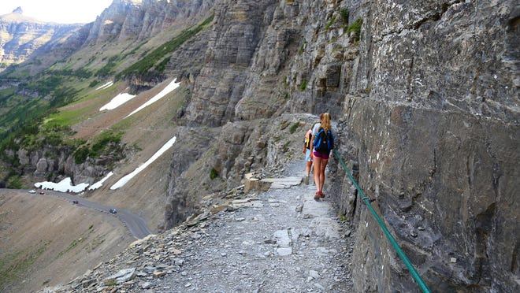

Named for the remnants of glaciers from the ice age, Glacier National Park is located on the border of Canada and the United States and is often called the "Crown of the Continent" since it sits at the headwaters of the streams that flow into the Pacific Ocean, the Gulf of Mexico and Hudson Bay. A favorite among hikers, the park features a variety of trails for all skill levels, ranging from the easy Trail of the Cedars to the challenging Grinnell Glacier. What's more, the park boasts more than 700 lakes, numerous waterfalls and two mountain ranges, spread across more than 1 million acres that shelter an array of wildlife. Aside from its breathtaking geological features, it's also home to a fair amount of history. The Going-to-the-Sun Road – a scenic, 52-mile drive through the park – is a National Historic Landmark and an engineering marvel that offers spectacular views, as well as access to popular hiking trails. Plus, many of the park's lodges, chalets and hotels were constructed by the Great Northern Railway in the early 20th century and are on the National Register of Historic Places.